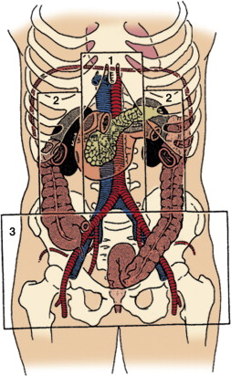

Retroperitoneal
exploration
In
general any retroperitoneal haematoma with penetrating
injury requires exploration
In
blunt trauma only
haematomas in the central area (Zone I) require
exploration.
Haematoma in left
flank/perinephric area:
· Left medial visceral rotation – Mattox Maneuver. I incise along
the line of Toldt and go behind the
left kidney anterior to Psoas. This allows access to
the aorta and its proximal branches.
If the suspect organ is
the kidney or ureter then find the plane between colon and
kidney.
Haematoma in
right flank or perinephric area: three stages
1.
Start with
Kocher manaeuvre. If exposure is insufficient then mobilize
the hepatic flexure. This exposes the posterior aspect of D2,
the right renal hilum and superior IVC.
2.
Divide the line of Toldt to expose the entire IVC,
right kidney and renal hilum and right iliac vessels.
3.
Cattell-Braasch
maneuver: incise the posterior peritoneal attachment from
medial side of caecum to the ligament to Treitz. Swing the colon
and small bowel onto the chest. Exposes the IVC, infra-renal
aorta, both renal arteries and veins, both iliac vessels
Now decide on
damage control vs. definitive repair
If damage control is
necessary I leave the abdomen open and manage the laparostomy
using either propriety VAC system or a home made sandwich.
· I place a sterile polyurethane sheet between the
viscera and the posterior surface of the abdominal wall.
· I place laparotomy sponges on the sheet, just
tucked under the fascia and then palce two JP drains (brought
out through inferior stab incisions) on top of the sponges
either side of the wound.
· I then clean and dry the wound edges and cover the
entire arranagemnet with Ioban.